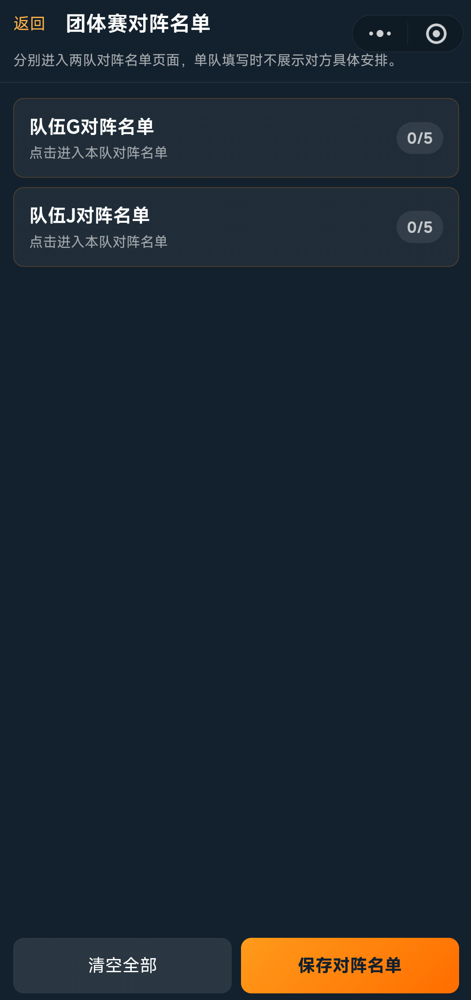
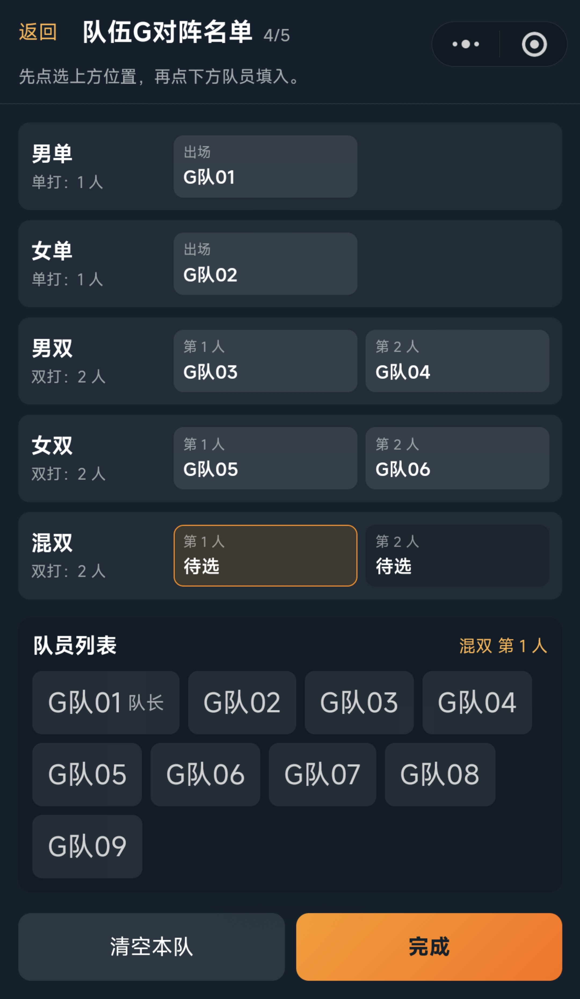
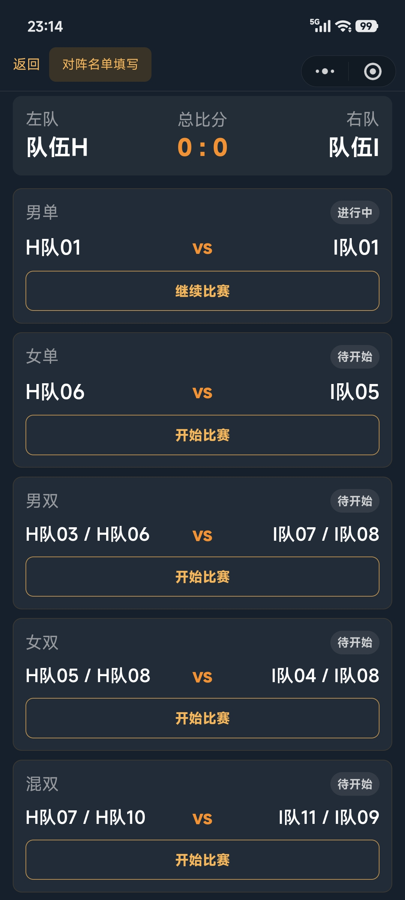
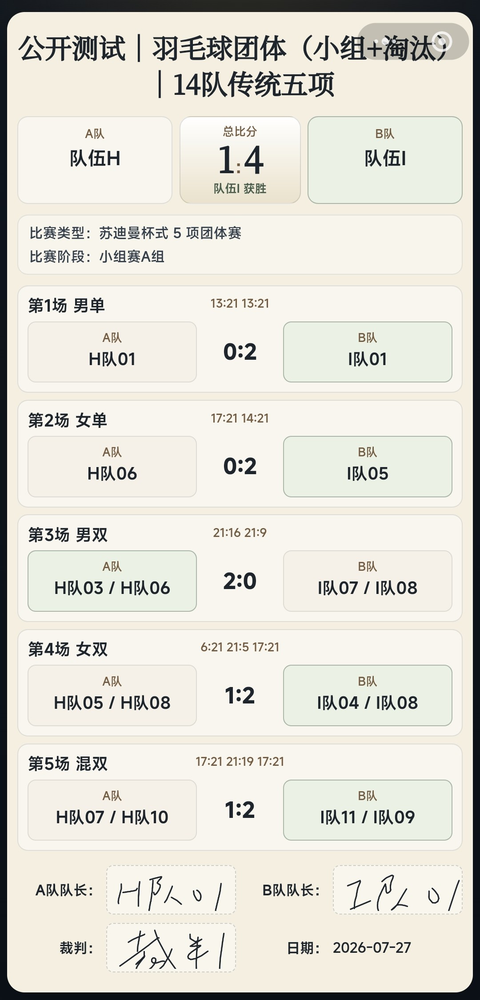
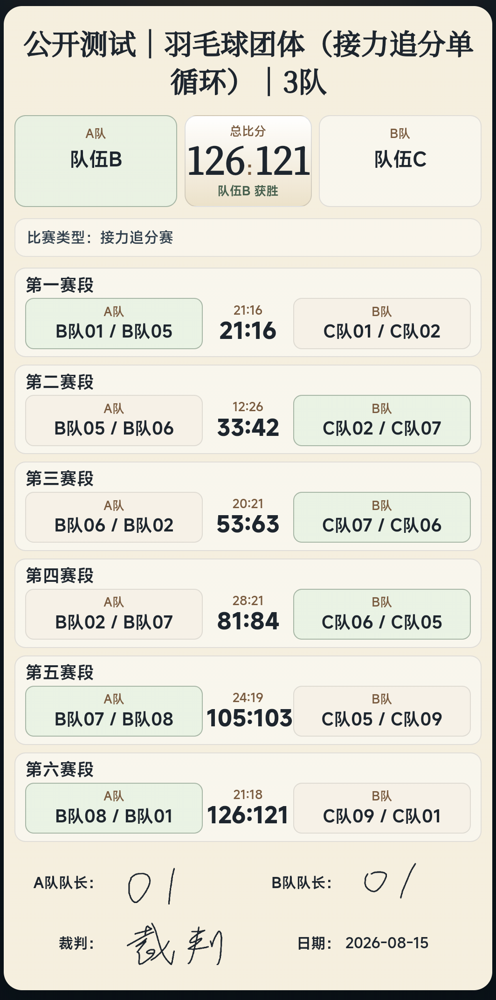

队伍成员录入
创建比赛时，每个队伍录入完整队员名单，并指定队长。现版本系统不作人数上限限制，由主办方自行操作。
临场填写阵容
每场比赛开始前，双方队长根据实际情况填写本场出战名单，裁判确认双方阵容填写完毕后可开始比赛。
羽毛球团体赛以队伍为参赛单位。系统支持队伍成员管理，并提供苏迪曼杯五项式团体赛和人员流转追分赛两种形式，用于不同规模和不同组织方式的团队比赛。
团体赛先录入队伍和成员，后续出场阵容可以在具体比赛中再确认。
创建比赛时，每个队伍录入完整队员名单，并指定队长。现版本系统不作人数上限限制，由主办方自行操作。
每场比赛开始前，双方队长根据实际情况填写本场出战名单，裁判确认双方阵容填写完毕后可开始比赛。


苏迪曼杯五项式团体赛由男单、女单、男双、女双、混双五个单项组成。系统用“父比赛”记录队伍对抗结果，用“子比赛”记录每个单项的具体比分。
裁判进入某一单项后，系统生成对应的羽毛球计分板。单项比赛结束后，比分和胜者会回写到父比赛中，形成队伍之间的总比分，例如 3:2。
苏杯五项式团体赛中，系统会统计胜场、场内大比分、局比分、局内小分和胜负关系等数据作为可选排名判定标准。

人员流转追分赛适合强调团队配合和快对抗节奏的团体对抗赛事。它不拆分为五项子比赛，而是在同一场父比赛中累计总分。
固定接力链：主办方设置轮转人数，范围为 3 至 12 人。开赛前双方确认队员上场顺序，按 1 号与 2 号、2 号与 3 号，……，最后 n 号和 1 号，首尾相连形成 n 组双打组合，出战 n 场双打比赛。
累计总分与阶段切换：双方在同一个计分板上累计总分。当任意一方累计分数到达当前接力阶段的分数节点时，系统提示切换到下一组队员。率先达到全场目标分数的队伍获胜。
接力赛独立排名：接力追分赛的排名模板中只有团体赛胜负、局内小分和胜负关系等排名标准，例如“胜场数 → 两队直胜 → 小分得失比”。
不同团体赛形式会生成对应的电子战报，用于确认队伍胜负和出场信息。
苏杯五项战报：展示双方队伍、最终团体比分、各单项子比赛出场队员和比赛结果。
接力追分战报：展示双方队伍、全场累计比分、各接力段出场组合和阶段比分。
签名与封存：电子战报保留双方队长和裁判签名区域，签名完成后由裁判确认封存。

